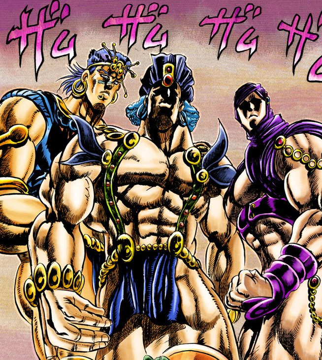

- Date: April 12th, 2023
- Attendance List:
- Jiapei Chen
- Joseph Joestar
- Robert SpeedWagon
- Caesar Anthonio Zeppeli
-
Report Current Progress
In the last meeting, we discussed about adding four new characters into the storyline we've been working

on: Santana, Wammu, Esidisi, and Kars. Each member will report their current progress on their part and
we will discuss some problems about these characters reported since the last meeting and decide how to
deal with them. -
Brainstorming About Ability Design of New Characters
In this meeting, we will focus on the ability design of the four new characters. So far, if everything goes
on smoothing, we should be about to complete the artistic design, the background story, and corresponding
storyline modification of the new four characters. We will brainstorming about the ability design of the characters
based on the background story. -
Designate Work on the Completion of Ability Design and Implementation
If we are able to come up with good ability design based on the criteria of loyal to the background story and
consensus of everyone in the team, we will designate work on the completion of ability design and implementation
of abilities in the game. -
Design Department: We will need to modify some of the scenes in the past storylines based on the background
of the four new characters. We have listed all the scenes we need to modify and we should discuss about this
on the next meeting. -
Technical Department: We are still working on some bugs caused by the last update. Also there are some modification
of abilities of characters need to be done. We will not be able to get into the development of new characters shortly
according to our current schedule.
Meeting Information:
Agenda:
Unfinished Business From the Last Meeting
In the last meeting we were talking about how and when to release the information of new characters to the players.
We will take some time discussing this issue and decide how should we present the upcoming update to the players in
the next several months.
New Business Need to be Talked About
The meeting will mainly focus on the ability design of the new characters, progressing our update to the next stage.
Current Problems and Comments
-
So far there are some problems and comments about the artistic design and storyline from different department.